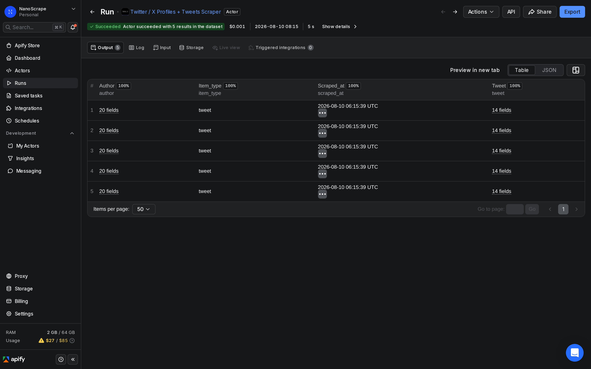
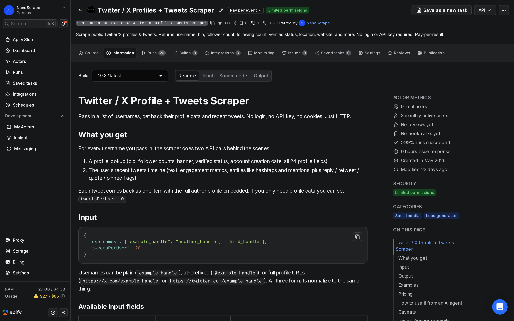
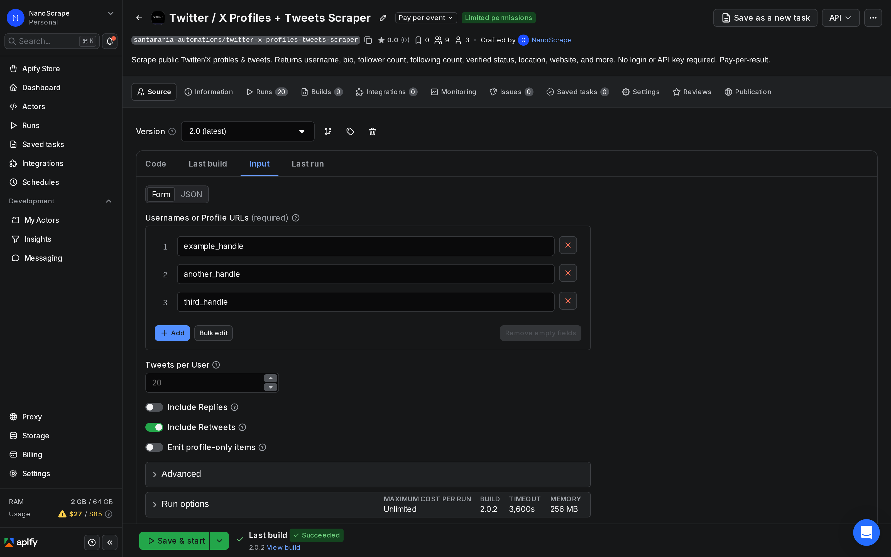
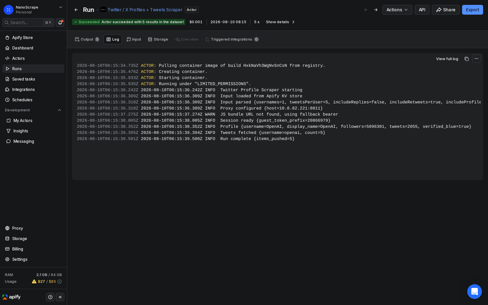

How to Research Twitter / X Influencers Without the X API
Supply a list of X handles and get back follower counts, blue-check status, bios, websites, and up to 1,000 recent tweets per account with full engagement metrics. Set tweetsPerUser to 0 and includeProfileOnlyItems to true for a fast profile-only pass. HTTP-only, no X API key, no developer app. About $0.31 per 1,000 profiles with 10 tweets each.

In this tutorial
Who this is for
This guide walks through one specific task: collecting profile data and recent tweet engagement for a batch of X / Twitter accounts in one automated run. It covers influencer vetting, list scoring, and scheduled monitoring.
- Influencer marketers who need to qualify dozens of creator accounts before outreach: confirm follower counts, verify the blue check, check posting frequency, and estimate engagement rate without visiting each profile by hand.
- Brand and PR teams building media lists: pull bios, websites, and recent tweet activity for a shortlist of journalists, creators, or industry voices in one batch run.
- Agencies and data teams enriching CRM records: append follower counts, verification status, and recent content snapshots to contact records automatically.
tweetsPerUser to 0 and includeProfileOnlyItems to true. Each account produces one profile item instead of a tweet-per-row. See the profile-only mode section below for the exact input.What you get
Each row in the dataset is one tweet with the full author profile embedded. For influencer research, the fields that matter most are spread across two nested objects:
Author profile fields
author.username: the X handleauthor.display_name: the display name as shown on the profileauthor.bio: the full biography textauthor.website_expanded: the resolved URL from the profile link field (not the t.co short link)author.blue_verified:truefor accounts with the current X blue-check subscription or legacy verificationauthor.verified:truefor the older government/brand/notable-entity verification (rare post-2023)author.followers_count: total followers at scrape timeauthor.following_count: accounts this user followsauthor.tweet_count: total posts publishedauthor.created_at: account creation dateauthor.listed_count: number of public X lists this account appears on (a secondary reach signal)
Tweet engagement fields
tweet.engagement.like_count: likes on this specific tweettweet.engagement.retweet_count: retweetstweet.engagement.reply_count: repliestweet.engagement.quote_count: quote-tweetstweet.engagement.view_count: impressions (visible where X reports it)tweet.is_retweetandtweet.is_reply: filter these out when calculating per-original-post averages
Here is what a real result looks like from a run we performed on 2026-08-10 (run ID JcOkZeE30aXbHwmlG):
{
"item_type": "tweet",
"tweet": {
"id": "2085434712429052386",
"text": "We're making better intelligence easier to access in ChatGPT for everyone...",
"created_at": "2026-08-06T18:35:55Z",
"url": "https://x.com/OpenAI/status/2085434712429052386",
"engagement": {
"reply_count": 1202,
"retweet_count": 1800,
"like_count": 20694,
"quote_count": 1084,
"view_count": 3695500
}
},
"author": {
"username": "OpenAI",
"display_name": "OpenAI",
"bio": "OpenAI's mission is to ensure that artificial general intelligence benefits all of humanity.",
"website_expanded": "https://openai.com",
"blue_verified": true,
"followers_count": 5096301,
"following_count": 4,
"tweet_count": 2055,
"created_at": "Sun Dec 06 22:51:08 +0000 2015"
},
"scraped_at": "2026-08-10T06:15:39Z"
}Prerequisites
- A free Apify account. Sign up at the actor page. The free tier gives you $5 of usage credit per month, enough for around 15,000 items.
- A list of public X / Twitter handles you want to research. Plain handles (
openai), @-prefixed handles (@openai), and full profile URLs (https://x.com/openai) all work and can be mixed in the same input. - No X developer account, no API key, and no app registration are needed.
Open the actor on Apify
- Go to the NanoScrape Twitter / X Profiles + Tweets Scraper on Apify.
- Click Try for free. Create a free Apify account with Google or email if you do not have one.
- Apify takes you to the actor input page in Apify Console.

Build your list and set the input
In Apify Console, switch to the Input tab. Paste your handles into the usernames field. For influencer vetting, tweetsPerUser: 10 is a good starting point: enough recent posts to estimate engagement quality without adding cost.
{
"usernames": [
"openai",
"sama",
"ylecun",
"AndrewYNg",
"fchollet"
],
"tweetsPerUser": 10,
"includeRetweets": false,
"proxyConfiguration": {
"useApifyProxy": true
}
}usernames(required): handles, @-handles, or full x.com profile URLs. Mix formats freely.tweetsPerUser: number of recent tweets to collect per account.10gives a solid engagement sample. Set to0withincludeProfileOnlyItems: truefor a profile-only pass (see the profile-only section).includeRetweets: set tofalseto exclude retweets and keep the dataset focused on original content. Retweets skew engagement averages because they show the engagement of the original post, not this account's audience.includeReplies: defaultfalse. Replies to other accounts rarely belong in an engagement-rate calculation.proxyConfiguration: leave the default. Residential proxies are used automatically. X blocks datacenter IPs hard.

Run and review results
- Click Start at the bottom of the input page.
- Watch the live log. A batch of 20 accounts with
tweetsPerUser: 10typically finishes in two to four minutes. - When the status shows Succeeded, click Results in the top tab bar.
- Switch to Table view and sort by
author.followers_countto rank by reach. - Click Export to download as JSON, JSONL, CSV, or XLSX for further analysis.

author.username and deduplicate, or use a UNIQUE formula on the username column before calculating averages.Calculate engagement rate from the data
The dataset gives you everything needed to calculate a per-account engagement rate. A common formula for X is:
engagement_rate = (avg_likes + avg_retweets + avg_replies) / followers_count * 100
From our demo run (2026-08-10), the @OpenAI account returned these metrics on its pinned tweet: 20,694 likes, 1,800 retweets, 1,202 replies, and 5,096,301 followers. That gives an engagement rate of roughly 0.46% per post, which is healthy for a large brand account on X. Micro-influencers with under 100,000 followers often show engagement rates of 1 to 5%.
includeRetweets: false and includeReplies: false before running. Retweets carry the engagement of the original post, which inflates averages for accounts that mostly retweet. Replies to other users reflect conversational activity, not broadcast reach.In a Google Sheet, add an engagement_rate column and enter this formula, adjusting column letters to match your export layout:
=( AVERAGEIF(B:B, B2, D:D) + AVERAGEIF(B:B, B2, E:E) + AVERAGEIF(B:B, B2, F:F) ) / G2 * 100
Where column B is username, D is like_count, E is retweet_count, F is reply_count, and G is the followers_count (same value on every row for that account). The AVERAGEIF groups all rows for the same account and calculates the per-tweet average before dividing by followers.
Profile-only mode for fast batch checks
If you only need follower counts, verification status, bios, and websites, you can skip tweet fetching entirely. This cuts run time and cost.
{
"usernames": ["openai", "sama", "ylecun", "AndrewYNg", "fchollet"],
"tweetsPerUser": 0,
"includeProfileOnlyItems": true,
"proxyConfiguration": {
"useApifyProxy": true
}
}tweetsPerUser: 0tells the actor to skip the tweet timeline request for each account.includeProfileOnlyItems: truepushes oneitem_type: "profile"record per account so you still get a row in the dataset. Without this, atweetsPerUser: 0run produces zero dataset items.- The profile item contains the full author object (all 17 fields) with no tweet nested inside it.
Schedule ongoing follower monitoring
A one-time run gives you a snapshot. To track follower growth or spot sudden spikes before a partnership decision, set up a recurring scheduled run in Apify Console.
- Open the actor in Apify Console.
- Click the Schedules tab and create a new schedule.
- Set the cron expression for your cadence. Weekly on Mondays at midnight UTC is
0 0 * * 1. Daily at 6 AM UTC is0 6 * * *. - Paste your influencer list into the scheduled run's input (profile-only mode if you only need the follower count trend).
- Export each week's dataset and append to a Google Sheet to chart growth over time.
Automate with n8n
Connect the scraper to a Google Sheet or Airtable automatically with n8n.
- Add a Schedule Trigger node in n8n set to run weekly.
- Connect it to an Apify: Run an Actor and get dataset node. Set the Actor ID to
santamaria-automations/twitter-x-profiles-tweets-scraper. - Set
tweetsPerUser: 0andincludeProfileOnlyItems: truein the input JSON for a fast profile-only pass. - Wire the output to an Append to Google Sheet node. Each weekly run adds a new batch of rows with a timestamp so you can chart follower trends.
Need a hosted n8n instance with no server setup? n8n Cloud runs your workflows continuously and includes the Apify node out of the box.
What it costs
- Actor start: $0.01 per run regardless of list size.
- Per item delivered: $0.0003 per tweet or profile-only record written to the dataset.
- Tweet mode example: 100 accounts with
tweetsPerUser: 10= 1,000 items x $0.0003 = $0.30 + $0.01 start = $0.31 total. - Profile-only example: 100 accounts with
tweetsPerUser: 0, includeProfileOnlyItems: true= 100 items x $0.0003 = $0.03 + $0.01 start = $0.04 total. - Free tier: Apify gives you $5 of monthly credit, enough for around 16,000 items.
FAQ
Do I need an X developer account or API key?
No. The actor reads publicly visible profile and tweet data over HTTP without an X API key, OAuth app, or developer account. A free Apify account is all you need.
Can I scrape any public X account?
Yes, as long as the account is public. Protected accounts (where the owner has locked their tweets) return the profile row but no tweet content. The is_protected field in the author object indicates this.
How many accounts can I scrape in one run?
There is no hard cap. For research lists of a few hundred accounts, a single run works well. For thousands of handles, splitting into batches of 200 to 500 reduces individual run time and makes any individual failure easier to retry without reprocessing the full list.
Does tweetsPerUser: 0 return any data?
Only if you also set includeProfileOnlyItems: true. Without that flag, a run with tweetsPerUser: 0 produces zero dataset items because the actor only writes items when tweets are delivered. Enabling includeProfileOnlyItems pushes one profile-only record per account.
Is follower count data accurate?
The actor returns the follower count as reported by X at scrape time. X updates these counts continuously, so a run captures the current value at the moment of scraping. For trend tracking, run on a regular schedule and record timestamps.
Is scraping public X profiles legal?
Scraping publicly visible data is generally permitted in most jurisdictions. The hiQ Labs v. LinkedIn ruling in the US established that accessing public data does not violate the Computer Fraud and Abuse Act. That said, X's Terms of Service restrict automated data collection. The legal picture varies by country and use case. Consult a lawyer before using the data commercially or at scale.
What if X starts blocking the scraper?
The actor uses residential proxies with automatic IP rotation and retries up to maxIPRotations times (default 5) before stopping. If X is rate-limiting hard, try reducing batch size or running during off-peak hours. The actor logs a clear error message rather than returning empty rows silently.
Related resources
- Twitter / X Profiles + Tweets Scraper actor page: Full specs, pricing details, and field reference for the actor.
- Twitter / X Profiles + Tweets Scraper on Apify: Actor README, input schema, and all output fields on Apify Store.
- How to Collect and Analyze Tweets: Use the same actor to collect tweet timelines from a set of accounts and aggregate hashtag use, posting frequency, and engagement trends.
- LinkedIn Company Scraper tutorial: Pull follower counts and employee counts from LinkedIn to complement your X research with cross-platform reach data.
- Extract Emails from Websites in Bulk: Use the website_expanded field from X profiles to feed a bulk email extraction run and enrich influencer contact records.